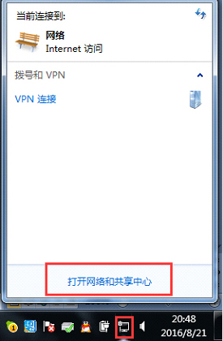
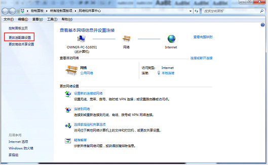
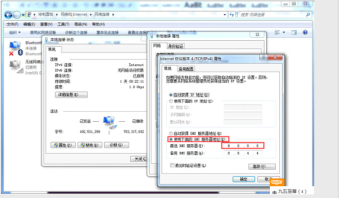

如发现登录天天的网址出现非七星官方页面那么就是您登录的七星网址被劫持了，非常危险，请您赶紧点此下载DNS一键优化。
01步骤STEP
方法一：请所有新老会员赶紧点此处下载安装以防万一； 优化后即可正常访问及电脑安全！
方法二：点击（打开网络和共享中心）

02步骤STEP
点击（更改适配器设备）

03步骤STEP
双击本地连接后，点击属性

04步骤STEP
双击INTERNET 协议版本4

05步骤STEP
出现页面后选择使用下面的DNS 服务器地址--将首选DNS服务器地址改为8.8.8.8 备用DNS服务器地址改为8.8.4.4
